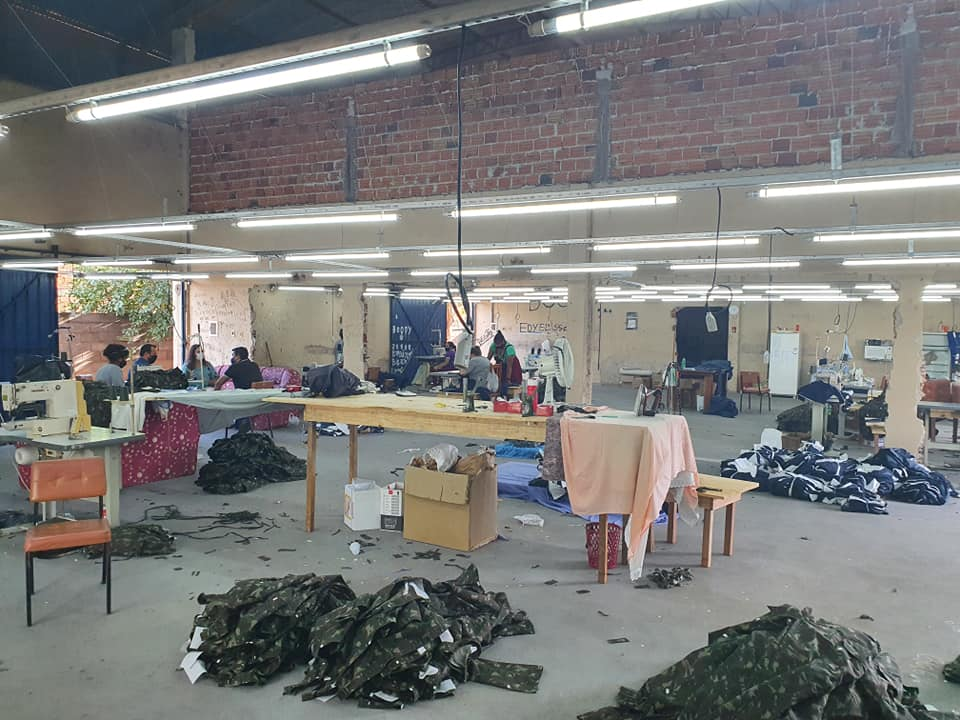
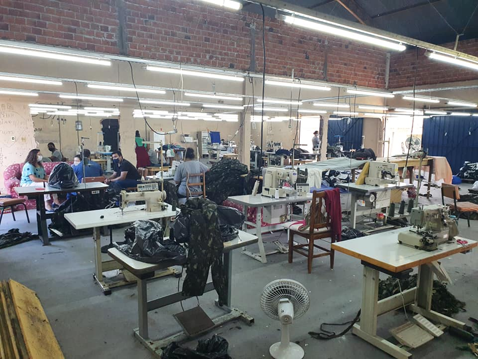
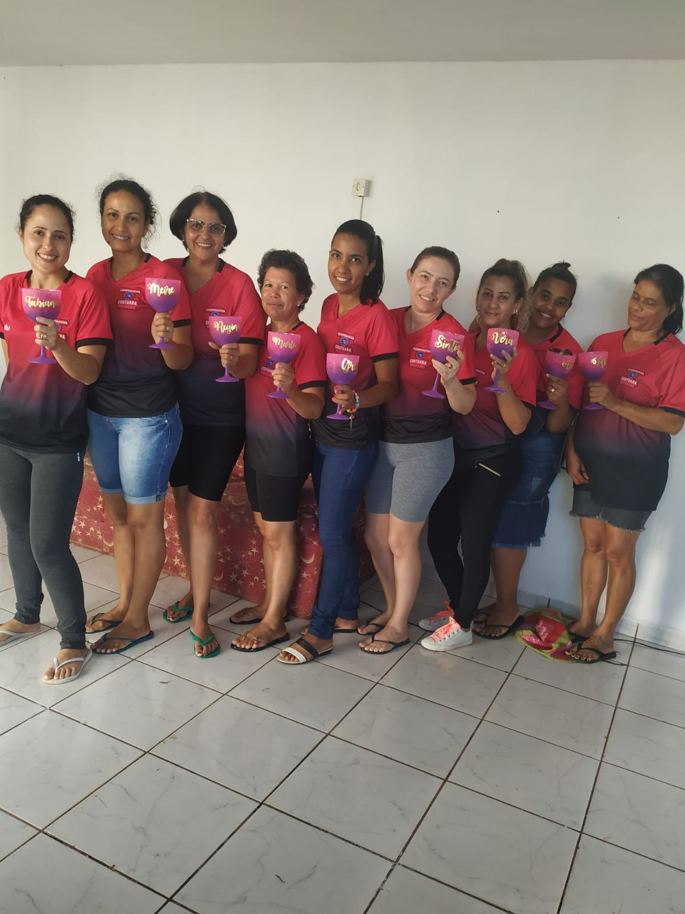

Cooperativa de Trabalho de Costureiras de Cafeara - Paraná
Nossa História
Nossa Costuara começou com um sonho de um homem com o coração de menino Matheus, esse foi nosso início, aí veio a Sintia Galdioli e Ana Paula para um sonho ser realizado, não foi fácil, foi muito difícil, foram muitos dias de lutas, quebrando a cabeça, até ser feito a primeira reunião, era tudo muito lindo, mais parecia fora do alcance, era alguns meses trabalhado sem pagamento, mais a vontade de dar certo era maior que qualquer coisa , assim fomos com muita fé em Deus, hoje tenho maior orgulho de falar que somos uma cooperativa tão sonhada, o sonho de um grande menino que nos levou até aqui, sei que ainda vamos ter dificuldades mais a nossa força de vontade de dar certo, vai ter E vamos vencer cada uma delas, agradeço cada uma de vocês somos uma equipe uma por todas e todas por uma, nosso agradecimento especial para você Matheus Nadab, que não mediu esforços para nós ajudar, juntamente com o nosso querido Prefeito Ocimar nossa gratidão eterna!
Juntos somos mais fortes!
E a nossa fé nós levamos mais longe!
Aonde os nossos sonhos podem chegar!


Dois anos de Costuara
Hoje o sentimento é de muita alegria e Gratidão a Deus, pois hoje a CooperativaCostuara completa 2 anos! Foi um início muito difícil, com muitos obstáculos pelo caminho, mas a vontade de vencer e a certeza de que de alguma maneira daria certo sim, pois sabíamos que Deus estava à frente de tudo foi bem maior e Unidas fomos vencendo cada dificuldade, hoje ainda existe as dificuldades, mas vemos os cuidados de Deus em cada detalhe e o quanto a Costuara evoluiu, o quanto nossa equipe é unida, batalhamos pelo mesmo objetivo, mesmo com pensamentos diferentes sempre chegamos ao conceito do que será melhor para todas, só Deus sabe da nossa caminhada, e o quanto estamos lutando para um dia realizarmos o nosso grande "sonho" sabemos que tudo é no tempo de Deus e que ele continue a nós abençoar e nós guiar...
Quero deixar aqui também um agradecimento a todas as pessoas que de alguma maneira ajudaram a Costuara...
Também não poderia deixar de lembrar daquelas pessoas que trabalhou conosco, vocês também fazem parte dessa história Que Deus abençoe grandemente.
Muito obrigada também por aqueles que acreditam no nosso trabalho e torcem por nós.
Parabéns, cooperativa Costuara!

Melhoria continua
Sala do Empreendedor de CAFEARA com apoio da Prefeitura Municipal e Sebrae - Promove Consultoria Financeira para Cooperativa Costuara